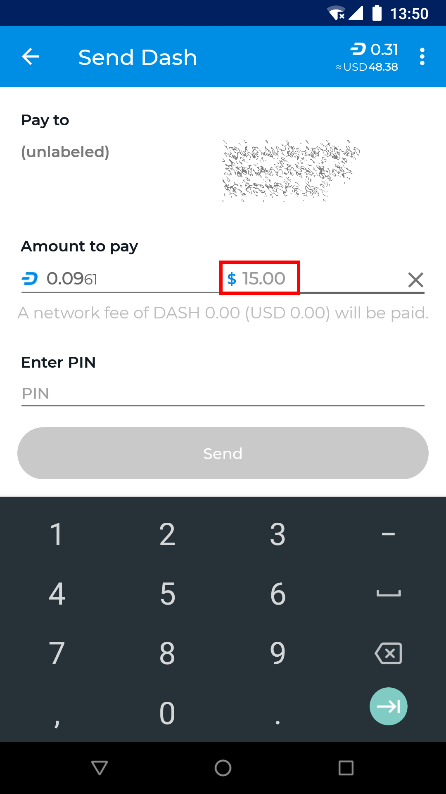
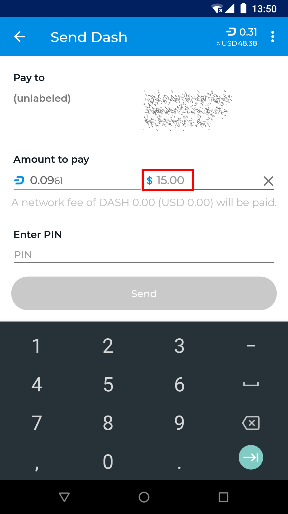
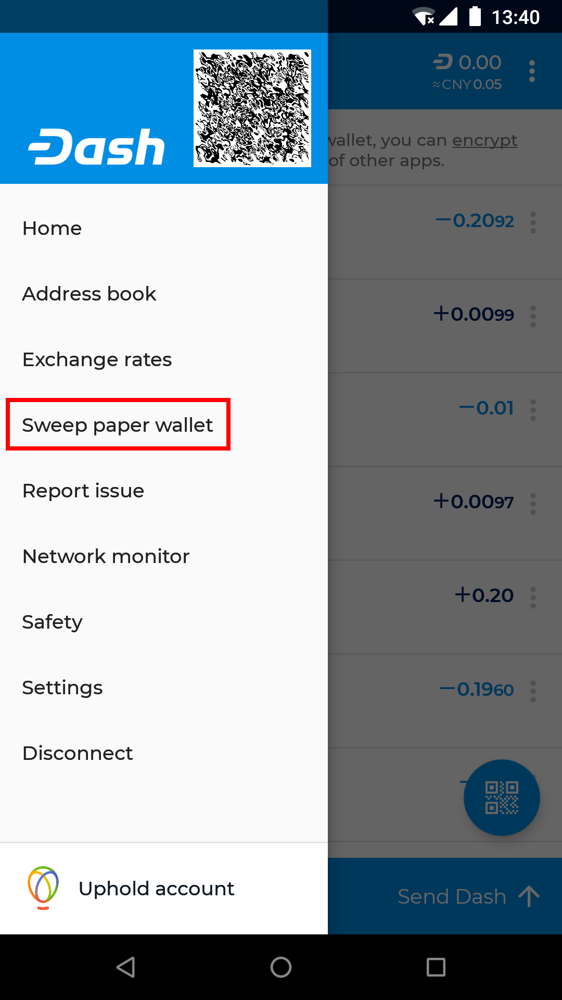
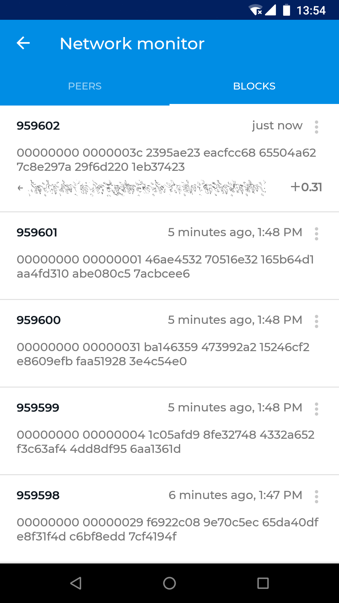
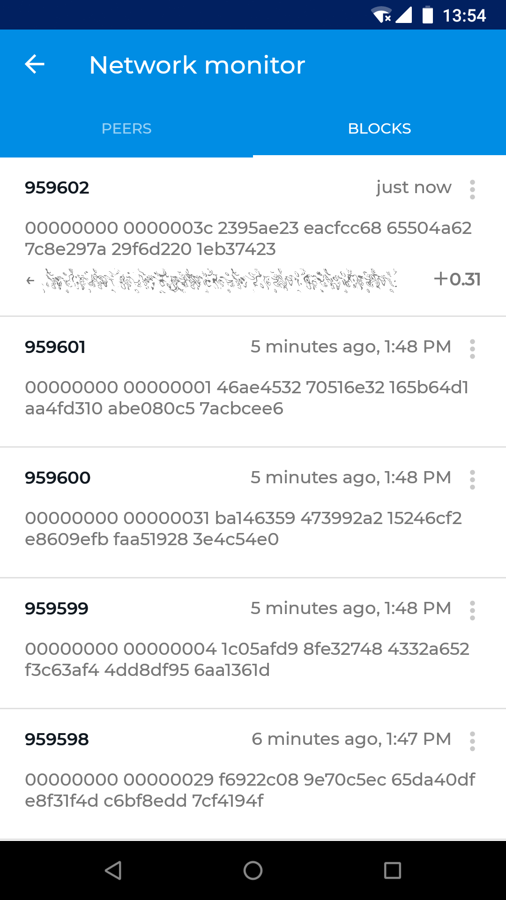

Advanced functions¶
Address book¶
Your Android wallet allows you to manage frequently used addresses by adding a label to help you identify the owner. You can also label your own addresses in the wallet in order to keep track of regular incoming payments. You can access the address book by tapping the Menu button, then Address book. This will display a screen where you can swipe left and right between your own addresses and the addresses to which you frequently send Dash, such as family members for example. Tap the More options button to Paste from clipboard or to Scan address from a QR code, or tap an existing address to Send Dash or Edit the label.

{kind=link}
{kind=link}
{kind=link}
Accessing the address book and adding an address
You can also add labels directly from the main transaction history screen by tapping the More options button for the transaction (three vertical dots) and selecting either Add label to your address, Edit label of your address, Add sending address or Edit label of sending address.


{kind=link}
Adding and editing address labels in transaction view
Exchange rates¶
Dash Wallet for Android allows you to display the equivalent value of your Dash balance and in transactions by selecting a default fiat currency. To select a default currency, tap the Menu button, then Exchange rates. Find your preferred fiat currency, then tap the More options button for that currency and select Set as default. The exchange rate for this currency will appear when sending Dash, and you can also tap in the fiat currency field to enter the value in the fiat currency directly, instead of in Dash.
 

{kind=link}
{kind=link}
{kind=link}
Selecting a fiat exchange rate and creating a transaction denominated in USD
Sweep paper wallet¶
Sweeping a paper wallet is a method of transferring the value stored on an address you may have received as a paper wallet or from an ATM into your own wallet. You must have access to the private key for an address to use this function. In this process, all Dash stored on the address will be sent to a new address that has been deterministically generated from your wallet seed. The private keys you sweep do not become a part of your wallet.
To sweep a paper wallet, tap the Menu button and select Sweep paper wallet. Tap the Scan button and scan the QR code from your paper wallet. Once the private key has been identified, tap Sweep to create the transaction moving the Dash into your own wallet. Once this transaction is confirmed, the paper is worthless and should be destroyed.
{kind=link}
{kind=link}

{kind=link}
Sweeping a paper wallet with 0.10 DASH into the Android Wallet
Network monitor¶
The Dash Android Wallet is a light wallet and functions in SPV mode, meaning it does not download a full copy of the blockchain. The network monitor allows you to view details about the full nodes to which you are connected. You can also swipe left to view blocks as they are created on the blockchain.
{kind=link}
 

{kind=link}
Viewing peers and blocks to monitor network activity
Settings¶


The Settings menu in Dash Android Wallet
The settings menu contains a range of options to control the behavior of the Dash Android Wallet. To access the settings, tap the Menu button, then Settings. You can then choose between Settings, Diagnostics and About, which displays wallet version, copyright, license and source code information.
Settings¶
- Denomination and precision
Select the number of decimal places to show for DASH denominations, or switch to mDASH or µDASH denominations
- Own name
Enter a short name to be included in your QR codes when displaying to other users for scanning. The short name will then appear as a label in their wallet to verify the recipient and simplify address management.
- Auto-close send coins dialog
Specify whether or not to close the send dialog once a payment is complete.
- Connectivity indicator
Enables display of an indicator in the Android notification area to be able to quickly verify connectivity.
- Trusted peer
Enter the IP address or hostname of a single peer to connect to.
- Skip regular peer discovery
Enabling this option prevents automatic peer discovery and forces connection to the one specified trusted peer only.
- Block explorer
Allows you to select which block explorer you want to use for functions linking to a block explorer.
- Data usage
Links to the Android Data usage function to view and/or restrict data usage for the app.
- Balance reminder
Enables an Android system notification to remind you of any unspent Dash if you don’t open the app in that time.
- Enable InstantSend
Enables functionality to use InstantSend to send and receive Dash.
- Enable Lite Mode
Enabling lite mode reduces bandwidth usage.
- Show disclaimer
Enables or disables various disclaimers and warning messages in the app.
- BIP70 for scan-to-pay
Enables use of the BIP70 payment protocol to add further verification and security features when scanning QR codes.
- Look up wallet names
Enables use of DNSSEC to attempt to identify a wallet name when creating transactions.
Diagnostics¶
- Report issue
Allows you to gather a range of information related to your wallet in order to send a bug report to developers for troubleshooting.
- Show xpub
Displays the extended public key for the seed used to generate addresses in your wallet. Providing your xpub to a third party will allow them to view your entire transaction history, but not make new transactions.
- Reset block chain
Resets data stored on your device relating to the blockchain. This data will need to be collected again from full nodes, similar to when setting up a new wallet. This process may take some time.